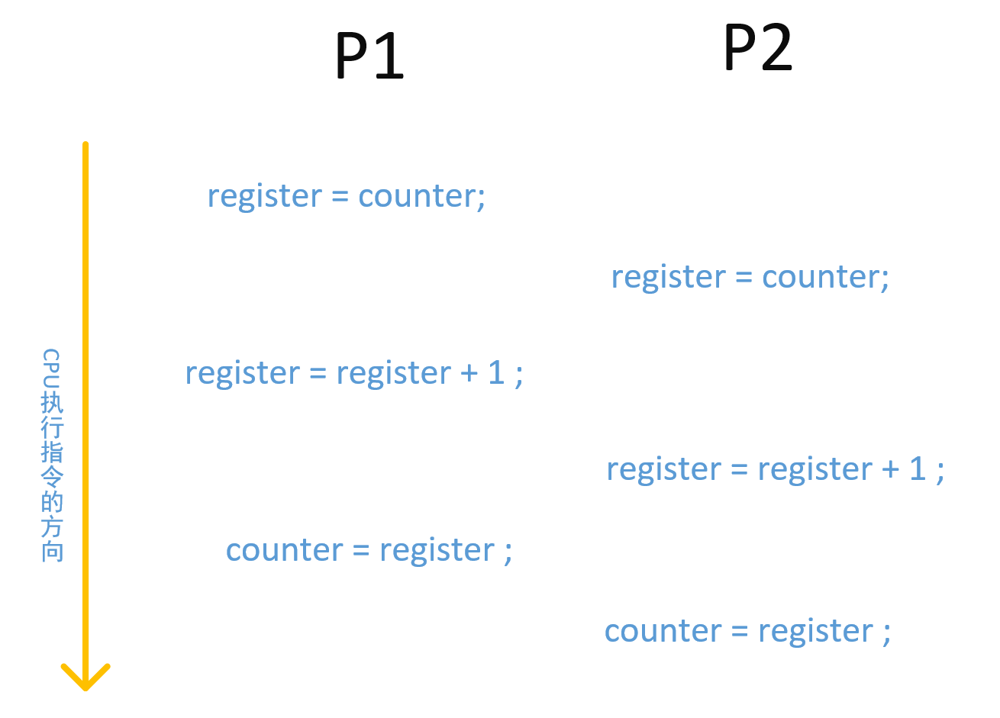
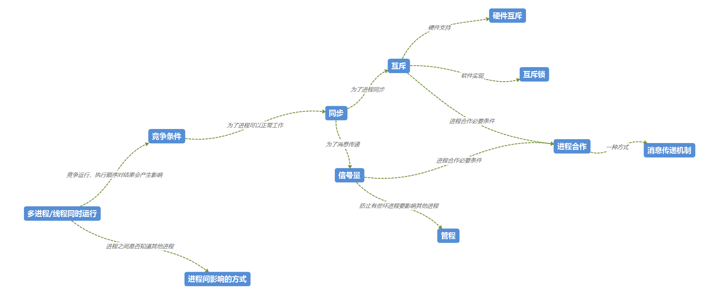
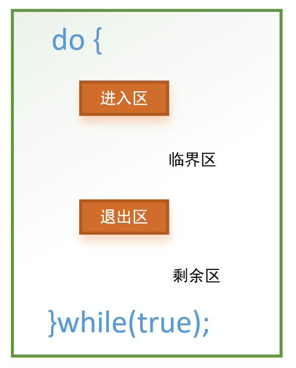

并发的原理
操作系统的核心问题是关于进程和线程的管理：
- 多道程序设计技术：管理单处理器系统中的多个进程。
- 多处理技术：管理多处理器系统中的多个进程
- 分布式处理技术：管理多台分布式计算机系统中多个进程的执行。
其中”多道”，”多处理器”，”多台”都是指多个程序可以同时运行（重叠执行或者交替执行）。如果多程序同时独立运行则问题可能很少，但是如果多程序之间有数据的共享，硬件资源的使用，都会出现很大的问题。所以操作系统或者程序本身要处理这些问题。
虽然CPU也是一种资源，但是多进程对CPU使用权的进程是
进程调度问题。二者的区别是，一个是谁先执行的问题，一个是怎么（谁先）使用资源的问题。
并发会出现什么问题呢？
举个例子：两个进程同时使用一个变量counter,对counter同时运行counter++操作。
// counter ++ 本质操作：
counter = counter + 1;
// CPU执行时的操作: register 表示寄存器
register = counter;
register = register + 1;
counter = register;由于CPU对进程的切换会导致执行三个执行命令的不确定就会导致一些问题: （P1表示进程1，P2表示进程2，这里使用图片）

P1和P2对counter都进行了加一操作，但是最终结果却只有一个成功了（被覆盖）。所以如果不对counter的访问进行一些控制，结果可能是4，5，6。
通过上面的例子，可得出：多线程或者进程在读写一个共享数据时，结果依赖于他们执行的相对时间，这种情形就形成了竞争。
操作系统为什么要关注同步相关的问题？
因为每一个进程都有自身的数据和对硬件资源的使用，操作系统必须保护每一个进程的数据和物理资源，避免其他进程的无意干扰。例如打印机设备，如果操作系统不对其进程管理，则每一个进程都是用，那么打印出来的结果可能都不是任何程序想要看到的。
同步
进程之间的交互可分为：
- 进程间相互不知道对方的存在：这种情况更多的发生在硬件资源的请求上，进程都想要请求一个资源，这是操作系统知道这个硬件资源的使用情况，所以需要操作系统对进程的请求做处理。
- 潜在的控制问题：互斥、死锁（可复用的资源）、饥饿
- 进程间接知道对方的存在：这个情况是指进程间通过访问共享的数据区或对象，进程知道存在其他的进程访问，但是不知道具体是什么进程。比如I/O缓冲区。
- 潜在的控制问题：互斥、死锁（可复用的资源）、饥饿、数据一致性
- 进程直接知道对方的存在：进程明确知道一起合作的进程是谁（即通过进程ID通讯）。
- 潜在的控制问题：死锁（可消费的资源）、饥饿

在计算机世界中，很多问题的解决方案或多或少都会存在一些问题，而且一些问题的解决方案会带来其他的问题。
比如：为了解决多进程间合作运行，需要同步，通信，但是解决同步和通信的方法又会带来死锁等问题。
临界区
什么是临界区呢？说白了，就是可能会被多个线程执行时会出错的代码语句集合（没有两个进程可以在他们的临界区内同时执行）。比如，上面例子的counter++，这句就要放在临界区内，防止多进程/线程对数据的读写出现问题。

- 进入区：实现进入临界区时的请求许可代码段
- 退出区：临界区结束后的释放请求许可的代码段
- 剩余区：退出区之后的代码所属的代码段
- 临界区：只能有一个进程执行的代码段
临界区问题的解决方案所需的要求：
- 互斥（mutual exclusion）：如果有一个进程在临界区内运行，那么其他进程不能进入执行
- 进步（progress）：如果临界区内没有进程执行，并且有进程想进入，那么只有哪些不在剩余区内执行的进程可以参加选择。
- 有限等待（bounded waiting）：如果一个进程想要进入临界区，当他发起请求到可以进入必须具有有限的时间内。
其实还存在一个问题，就是：进程在进入区执行时，那么怎么保证只有一个进程获取许可呢？这其实就需要硬件的支持才可以。
如果想在软件方面支持，可以参考
Peterson解决方案，这个解决方案放在现在的CPU指令执行方式，可能并不能保证正确性。
通过软件实现对临界区的保护方式称为加锁机制。
怎么样才算互斥呢？或者说互斥的要求是什么：
- 必须强制是是互斥：对与相同资源或共享对象的临界区的所有进程中，一次只允许一个进程执行。
- 一个在非临界区停止的不能干涉其他进程
- 绝不允许出现需要访问临界区的进程被无限推迟的情况
- 如果当前临界区没有任何进程，则只要有进程想要进入，则可以立即进入
- 对于相关进程的执行滚速度和处理器数目没有要求
- 一个进程驻留在临界区中的事件必须是有限度的。
—- 《操作系统精髓和设计原理 P144》
创建实现互斥的方法：
- 由并发执行的进程担负这个职责，这叫做软件方法
- 使用专门的机器指令
- 使用操作系统或程序设计语言中提供支持，比如Go的协程则是在语言级别上支持
硬件上支持同步
使用硬件支持其本质就是寻找一个原子性的指令，保证同一时刻只能有一个进程/线程成功。所以，对于单CPU环境，临界区问题只需要在修改共享变量时禁用终端就可以实现；但是对于多处理器结构，禁用中断需要消耗需要性能，而且会影响系统其他功能。所以现在对于多处理器系统，需要硬件提供硬件指令，用于检测和修改字的内容，或者原子性的交换两个字。CAS原理为这提供了一个思路：CAS(Compare-and-Swap),即比较并替换，CAS需要三个操作数：需要读写的内存地址V、进行比较的值A，需要写入的新值B。当且仅当V的值等于A时，CAS才会通过原子的方式用新值B更新V的值，否则不会执行任何操作。
CAS的含义：认为V的值应该是A，如果是，(说明没有任何其他的进程更改过)，那么就可以将V的值更新为B，否则不修改并告诉V的值实际是多少。 —- 《Java并发编程实战 P263》
硬件提供的特有指令可以抽象为两种形式：test_and_set(),compare_and_swap()
术语介绍：忙等待或者叫自旋等待指的是进程在得到临界区访问权之前，他只能继续执行测试变量的指令来得到访问权，除此之外不能做其他事情。 —- 《操作系统精髓和设计原理 P144》
对test_and_set()指令进行抽象则可以表示为：
// 指令test_and_set的定义
boolean test_and_set(boolean *target){
boolean rv = *target;
*target = true;
return rv;
}
// -------------------------
// 采用指令test_and_set的互斥实现
do{
// 如果没有得到期望的false值，则一直处于执行while循环
// 直到临界区的进程执行退出区的代码段
while(test_and_set(&lock))
; /* do nothing */
/* critical section */
lock = false; // quit section
/* remainder section */
}while(true);对compare_and_swap()指令进行抽象则可以表示为：
// 指令compare_and_swap的语义解释
int compare_and_swap(int *value, int expected, int new_value){
int temp = *value;
// 测试原来的值是否被其他进程改变，如果没有改变，则设置新值，否则返回
if(*value == expected)
*value = new_value;
return temp;
}
// 采用指令compare_and_swap的互斥实现
do{
// 测试期望值是否是0，即退出条件是否成立
while(compare_and_swap(&lock, 0, 1) != 0)
; /* do nothing */
/* critical section */
lock = 0; // 退出段
/* remainder section */
} while(true);以上两种虽然满足互斥要求，但是对于有限等待并没有满足。
有界等待互斥的test_and_set()实现：
// 共享数据结构，都初始化为false
boolean waiting[n]; // n是进程数
boolean lock; // 表示是否允许进入
do{
// 将要执行的进程
waiting[i] = true;
key = true;
while(waiting[i] && key){
key = test_and_test(&lock);
}
// 取消自己的等待
waiting[i] = false;
/* critical section */
// 这个while循环时寻找下一个可用的进程
// 为了让每一个进程的等待时间最大为n-1次执行时间。
j = (i + 1) % n;
while((j != i) && !waiting[j]){
j = (j + 1) % n;
}
// 退出区代码
if( j == i){
// 如果没有新的进程等待，则直接退出
lock = false;
} else {
// 如果找到下一个等待的进程，则直接设置其进入临界区
waiting[j] = false;
}
/* remainder section */
} while(true);